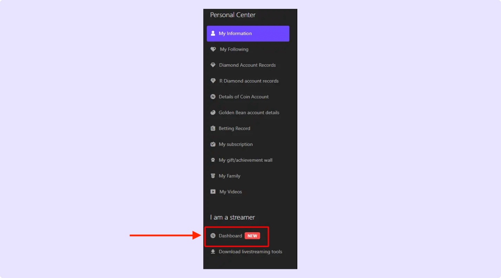
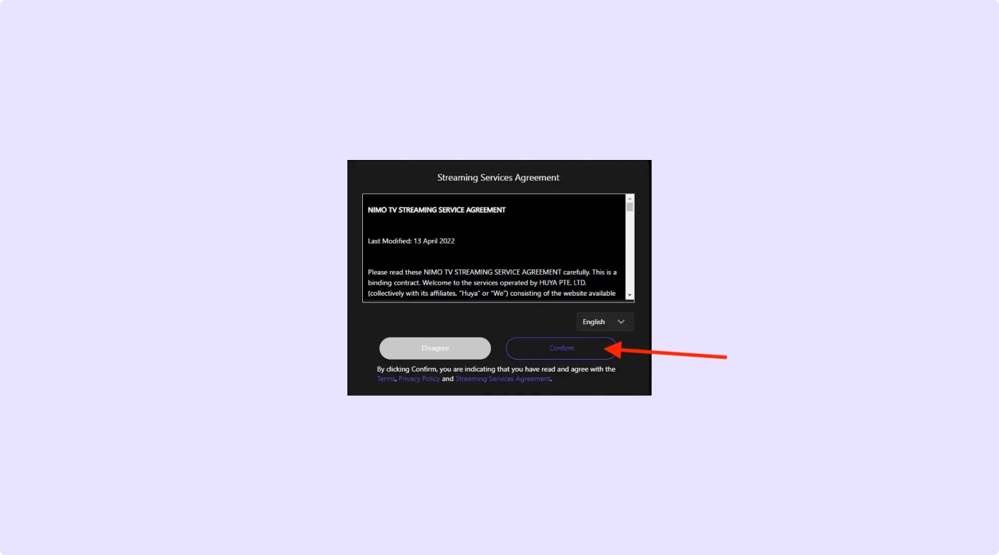

Log in to Nimo TV, then click on your profile picture and select Dashboard.
How to Stream Live on Nimo TV with Screen Recorder
Welcome to Screen Recorder, Let’s get started with a step-by-step guide to unlock your streaming potential.
Step 1: After logging into your account, click your profile picture. Then click on the Dashboard

Step 2: Read the Streaming Service Agreement of Nimo TV and Select Confirm
Read and accept the Streaming Service Agreement, then click Confirm.

Step 3: Enter streaming details and Click Update Information
Enter your streaming details and click Update Information.

Step 4: Click on Preferences > Stream. You will now see your unique Server URL and Stream Key on the right
Click on Preferences > Stream to find your unique Server URL and Stream Key.

Step 5: Paste Server URL and Stream Key in our app and enjoy live streaming
Paste your Server URL and Stream Key into the Screen Recorder app and start streaming!